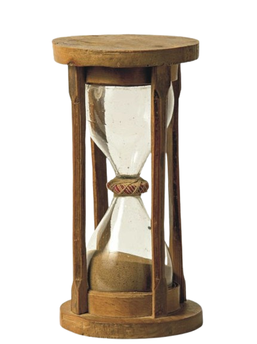

| Articulo | ||
|---|---|---|
JuegosInfantilesEscrito: 15/11/2020 por: Claudia Gran parte del contenido y significado del juego infantil está constituido por las actividades lúdicas en las que el niño representa algún papel e imita aquel aspecto más significativo de las actividades adultas y de su contacto con ellas. |
TestimonioDurante mi infancia, los juegos fueron más que simples pasatiempos; fueron las herramientas que construyeron mi imaginación y forjaron amistades inolvidables. Cada vez que pienso en aquellos días, recuerdo con cariño los juegos que compartí con mis amigos y los artículos que los acompañaron, como nuestras cartas de Pokémon, nuestros dados de Dungeons & Dragons o nuestros controles de videojuegos. Estos artículos no eran solo objetos, eran portales a mundos de aventura y creatividad. Recuerdo cómo pasábamos horas interminables intercambiando cartas de Pokémon, debatiendo estrategias y compartiendo risas. Los dados de Dungeons & Dragons nos transportaban a reinos de fantasía donde éramos héroes valientes enfrentando desafíos épicos. Y los controles de videojuegos nos permitían explorar mundos digitales llenos de maravillas y peligros. A través de estos juegos, aprendí lecciones importantes sobre cooperación, estrategia y resolución de problemas. Pero lo más importante, encontré una comunidad de amigos con quienes compartir mi amor por la aventura y la diversión. Los lazos que creamos mientras jugábamos siguen siendo algunos de los más fuertes que tengo hasta el día de hoy. Los artículos de juegos de mi infancia no solo fueron objetos materiales, fueron los tesoros que dieron forma a mis recuerdos más preciados. Siguen siendo testigos de las risas compartidas, las victorias celebradas y los desafíos superados. Y aunque los años pasen, esos recuerdos seguirán siendo una fuente eterna de alegría y nostalgia en mi corazón. |
|
|  |
El juego en la infanciaEscrito: 18/12/2020 Por: Karina Tienen una gran variedad de productos de muy buena calidad. La persona que me atendió fue muy cordial y me sugirió varios productos de acuerdo.a la edad de mis hijos. |
|